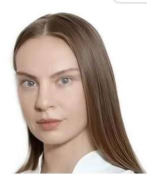
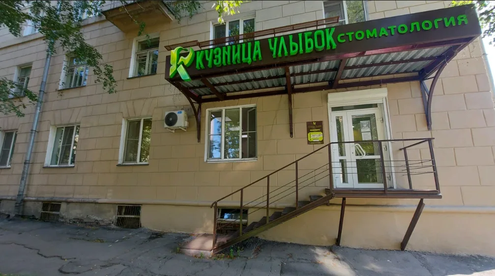
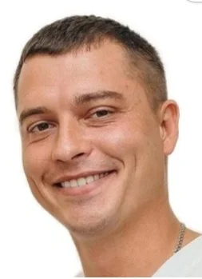
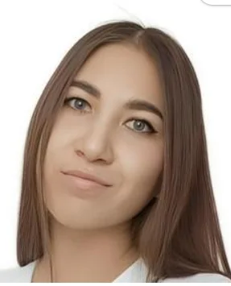
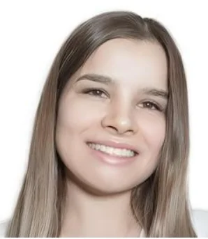
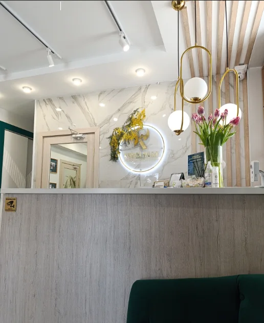
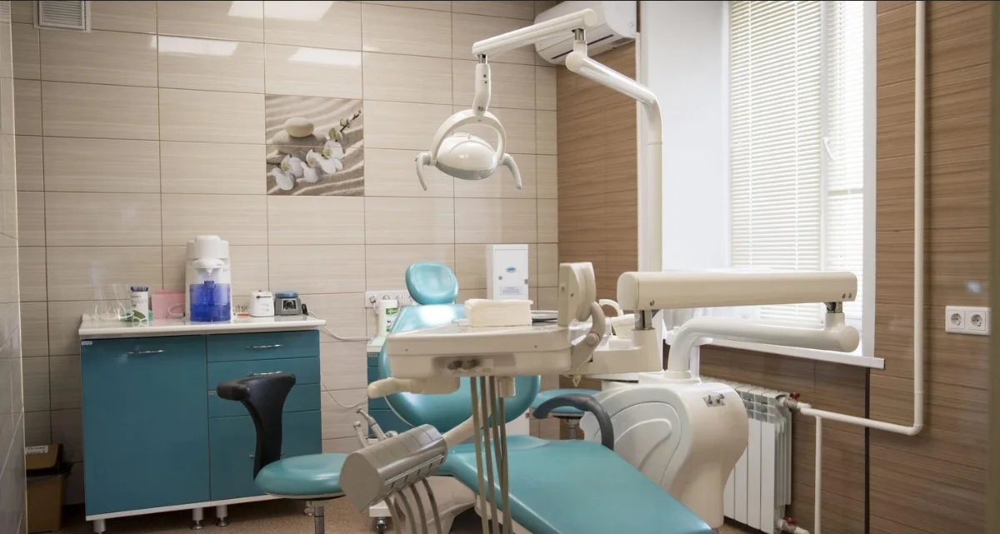
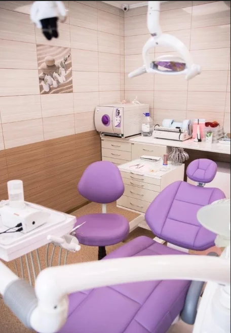

Новокузнецк · улица Ленина, 38
КУЗНИЦА УЛЫБОК
Стоматология
- Металлические и керамические брекеты
- Лечение кариеса и корневых каналов
- Профессиональная гигиена

Услуги клиники
От лечения кариеса до коррекции прикуса. Стоимость нужной услуги уточняйте у администратора.
Ортодонтия
- Металлические брекетыуточнить
- Керамические брекетыуточнить
Терапевтическая стоматология
- Лечение кариесаС использованием импортных анестетиковуточнить
- Лечение корневых каналовМедикаментозная обработка и пломбированиеуточнить
- Устранение воспалённого нервауточнить
Гигиена и мягкие ткани
- Профессиональная гигиена полости ртауточнить
- Лечение мягких тканей полости ртауточнить
Для уточнения стоимости позвоните или отправьте запрос в WhatsApp.
Как запросить запись
- 01
Выберите направление
Укажите, по какому вопросу хотите обратиться к стоматологу.
- 02
Отправьте запрос
В WhatsApp откроется готовое сообщение с выбранной услугой и желаемым днём.
- 03
Согласуйте время
Администратор подтвердит возможность приёма и время визита.
Врачи «Кузницы улыбок»
Познакомьтесь со специалистами и выберите, к кому хотите обратиться.



Загляните в клинику
Ресепшен и кабинеты на улице Ленина, 38.



Пример результата лечения
Фотографии до и после. Результаты лечения индивидуальны.
Три направления заботы об улыбке
Ортодонтия
Металлические и керамические брекеты для коррекции прикуса.
Лечение зубов
Лечение кариеса, устранение воспалённого нерва, обработка и пломбирование каналов.
Профессиональная гигиена
Комплекс гигиенических мероприятий и лечение мягких тканей ротовой полости.
Частые вопросы
Как записаться к конкретному врачу?
Выберите врача в разделе команды и отправьте запрос в WhatsApp. Дату и время приёма необходимо подтвердить у администратора.
Можно ли узнать стоимость заранее?
Уточните стоимость консультации и интересующей услуги по телефону или в WhatsApp. Актуальные цены на сайте не указаны.
Устанавливают ли в клинике брекеты?
Да. В числе направлений клиники — установка металлических и керамических брекетов.
Выбранный день означает подтверждённую запись?
Нет. Форма помогает составить запрос с вашими пожеланиями. Запись подтверждает администратор в переписке.
Сделайте первый шаг к своей улыбке
- Адрес
- Улица Ленина, 38, Новокузнецк
- Режим работы
- Уточняйте по телефону
- Телефон
- +7 (913) 122-97-27